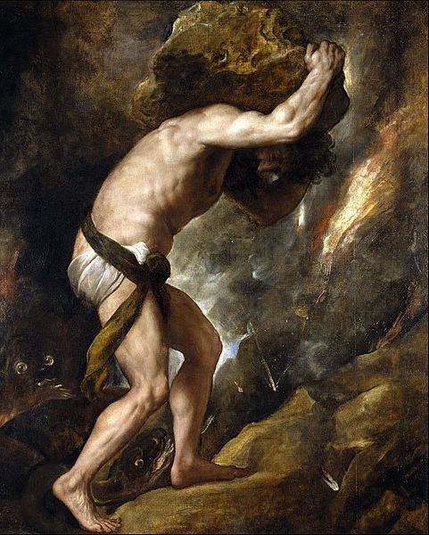

عمل على تأكيد العديد من أفكاره الرئيسة بدلا من مناقشتها، وقدم الأفكار الأخرى في استعارات مجازية، كان منشغلا بالتجربة المباشرة والشخصية، مزجيا جلّ وقته في التفكير بمسائل تتعلق بمعنى الحياة في مواجهة الموت. فصل كامو نفسه بقوة عن الوجودية، لكن رغم ذلك، قام بطرح أحد أشهر المسائل الوجودية المعروفة في القرن العشرين، والتي جاءت في مستهل كتابه (أسطورة سيزيف): “هناك مسألة فلسفية حقيقية واحدة، ألا وهي الانتحار” وقد تركتنا فلسفته عن العبث في مواجهة صورة مدهشة عن مصير الإنسان [2]

اسطورة سيزيف ، هي أسطورة قديمة تروى قصة سيزيف الذي استطاع أن يخدع إله الموت ، فتغضب عليه الآلهة وتقرر عقابه بأنه يحمل صخرة كبيرة إلى القمة ثم تعود لمكانها من جديد … وهكذا إلى الأبد بلا نهاية، فيقول كامو أن حياتنا هذه لا تختلف عن حياة سيزيف تلك، فبعد كل يوم نقضيه يأتي يوم أخر مثله وبعد كل شهر يأتي شهر أخر بعده وهكذا في روتين وتكرار ممل بلا جدوى ولا غاية ولا معنى.. إنه العبث.. كما أن هذا العالم حسب كامو غير عقلاني فكلما سعيت لتفهم العالم والوجود ستصل إلى نهاية أنه لا معنى محدد له، فمع كوننا نسعى لفهم الوجود بعقولنا إلا أننا في كل مرة نقتنع أنه عبثي ولا عقلاني، فكل شيء في هذه الحياة لو تأملنا وترصدنا حركتها، من شخص يموت وأخر يولد وذاك ينجح والأخر يسقط فنظن أن هناك معنى وغايات وراء هذا لكننا سرعان ما نكتشف بعد تأمل أنه لا جدوى من فهم حوادثها وتقلباتها العشوائية [3]
ولكن: كيف يمكن للإنسان أن يعبر عن العبث، عن لامعنى كل فعل وكل شيء؟. يجيب كامو: إن أفضل رد يمكن أن يعبر به الإنسان عن العبث هو "الصمت". حين يكون الأمل خرافة، ويكون اللا معنى هو جوهر كل الأشياء؛ "ما الذي يمكن للإنسان أن يكونه؟" ما الذي ينبغي أن يفعله تجاه كل هذا العبث "هل ينتحر؟". [3]
كامو يجيب: لا! ليس الانتحار؛ لأن الإنسان حين ينتحر يثبت بذلك الأمل والمعنى بشكل عكسي فلا يكون هذا تعبيرًا عن العبث أو حتى اليأس فبحسب كامو "إن ردة الفعل المناسبة تجاه فقدان الأمل تكون بالتمرد."

ما الإنسان المتمرد؟
يجيب كامو: أنه الإنسان الذي يقول: لا!
بحسب كامو، فإن الإنسان الذي يتمرد يضع حياته على المحك في سبيل تحقيق حريته، وهذه الحرية لابد أن تقوم هي الأخرى على استعباد فرد آخر "وهكذا تكون معضلة وتناقض مفرط في الالم" كما يقول كامو. ذلك أنه قد قُدِّر لنا أن نكون إمّا أحرارا أو مستعبدين.
إنه ينشد إلى عالم تتساوى في حرية كل فرد. ولا يقوم على المساواة الحقيرة بين الضحايا لكنه ما لبث أن أصيب بالإحباط فزادته عبثيته ليكتب مسرحيات مفرطة في اليأس ويموت في حادث سير في عام 1960. بعد أن كان قد كتب في ريعان شبابه رسالة إلى أحد اصدقائه "إن أكثر موت مفرط في العبثية يمكن لي أن أتخيله هو الموت في حادث سير". [3]


 By Fai
By Fai